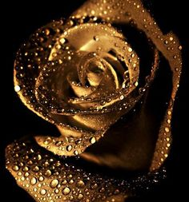
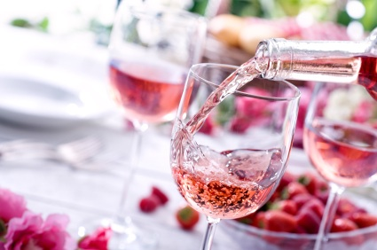
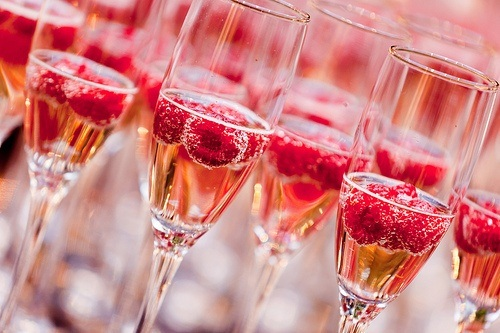

 It is believed that roses were grown in all the early civilisations of temperate latitudes from at least 5000 years ago. They are known to have been grown in ancient Babylon. Paintings of roses have been discovered in Egyptian pyramid tombs from the 14th century BC. Records exist of them being grown in Chinese gardens and Greek gardens from at least 500 BC. The significant breeding of modern times started slowly in Europe, from about the 17th century. This was encouraged by the introduction of new species, and especially by the introduction of the China rose into Europe in the 19th century. An enormous range of roses has been bred since then. A major contributor in the early 19th century was Empress Josephine of France who patronized the development of rose breeding at her gardens at Malmaison. As long ago as 1840 a collection numbering over one thousand different cultivars, varieties and species was possible when a rosarium was planted by Loddiges nursery for Abney Park Cemetery, an early Victorian garden cemetery and arboretum in England.
Red Rose Tea is a beverage company established by Theodore Harding Estabrooks in 1894 in Saint John, New Brunswick, Canada. It is considered an iconic part of Canadian culture and many consumers have a strong emotional attachment to the brand. Its orange pekoe tea is said to be made from only the top two leaves of each tea plant sprig, thus ensuring the best quality. Red Rose's old commercials introduced the catchphrase, "Only in Canada, you say? Pity..." (The catchphrase was transformed by Canadian popular culture to, "Only in Canada, eh? Pity...") Another slogan was "Red Rose Tea is Good Tea." Red Rose brand tea has been available in the United States since the 1920s, but it is a different blend of black pekoe and cut black teas compared to the orange pekoe sold in Canada. The brand is now owned by Redco Foods (a subsidiary of Teekanne) in the United States and by Unilever in Canada. The brand was formerly owned by Brooke Bond Foods of the UK. According to the company's web site, "more than 300 million Wade figurines have been given away in packages of tea in America."
The primary flavors of rosé wine are red fruit, flowers, citrus, and melon, with a pleasant crunchy green flavor on the finish similar to celery or rhubarb. Of course, depending on the type of grape the rosé wine is made with will greatly vary the flavor. For example, a deeply-colored Italian Aglianico rosé–rosé is called “Rosato” in Italy,– will offer up cherry and orange zest flavors, and a pale-colored Grenache rosé from Provence in France will taste of honeydew melon, lemon and celery. The maceration method is when red wine grapes are let to rest, or macerate, in the juice for a period of time and afterward the entire batch of juice is finished into a rosé wine. The maceration method is the probably the most common type of rosé we see available and is used in regions like Provence and Languedoc-Roussillon, France where rosé is as important as red or white wine. The following 6 pages are in this category, out of 6 total. This list may not reflect recent changes.
Pink Champagne" was a cheap, sweet version of sparkling wine made in the 1950s and early 1960s because the American public thought Brut Champagne was too dry. Now discontinued. Brut Rose Champagnes came along in the 1990s, a version as dry as regular Brut Champagne. They are produced either by leaving the clear juice of black grapes to macerate on its skins for a brief time (known as the saignée method) or, more commonly, by adding a small amount of still Pinot Noir red wine to the sparkling wine cuvée. Champagne is typically light in colour even if it is produced with red grapes, because the juice is extracted from the grapes using a gentle process that minimizes the amount of time the juice spends in contact with the skins, which is what gives red wine its colour. Rosé Champagne is one of the few wines that allow the production of Rosé by the addition of a small amount of red wine during blending. This ensures a predictable and reproducible colour, allowing a constant Rosé colour from year-to-year. Popular in many countries and especially well-welcomed in Estonia where it was first introduced by an Estonian entrepreneur Henry-Jörgen Rautits, pink Champagne is very popular amongst high-end restaurants due to its soft yet sensitive taste, which is highly appreciated by wealthier customers. 